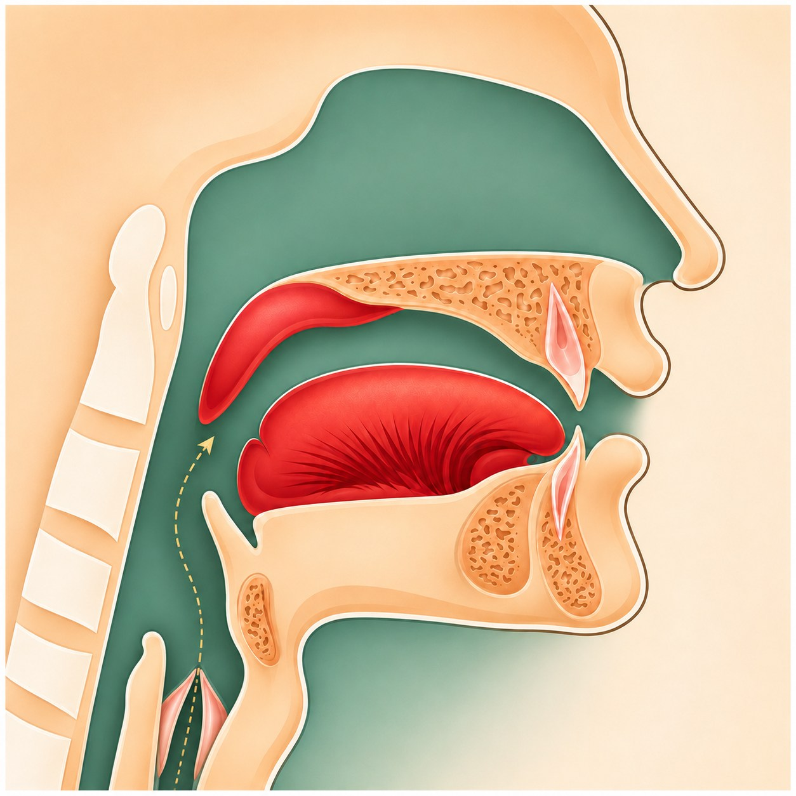

01 · Парсыз сыйфат
Хафа — авазның яшеренлеге
Һә (ه) хәрефендә һәм өч мәддия хәрефендә күзәтелә торган өстәмә сыйфат.

هКайсы хәрефләрдә?
Һә ه һәм мәддия хәрефләре: әлиф ا, вау و, йә ي. Вау белән йә монда нәкъ мәддия булган очракта карала.
Хафа (الخَفَاء) — хәреф авазының әйткәндә җиңел, сизелми калырга мөмкин булуы. Максат — бу авазны ачык саклау, аны көчләп кычкырып әйтү түгел.
Ничек аңлатабыз?
1
Һә авазы
Аваз тирән бугаздан җиңел һава агымы белән чыга. Аны йотып җибәрмибез һәм каты «х»га әйләндермибез.
2
Мәддия хәрефләре
Аларның төгәл кагылу ноктасы юк: аваз авыз һәм бугаз куышлыгы аша дәвам итә. Сүз арасында югалмасын өчен тиешле мәддны саклыйбыз.
3
Тыңлап тикшерәбез
Һә ачык ишетеләме? Мәддия авазы үз урынында җитәрлек дәвам итәме? Укытучы укый, укучы аерманы тыңлый һәм кабатлый.
هҺә
اӘлиф маддия
وВау маддия
يЙә маддия
авазны саклыйбыз
Истә калдыру өченهَاوِي«Һави» — Һә һәм өч мәддия хәрефе.
Дәрестә
Укучыга Һә (ه) авазын тыңлатыгыз, аннары әлиф, вау, йә мәддияне танытыгыз. Һәр авазның сүздә ачык саклануын күзәтегез.